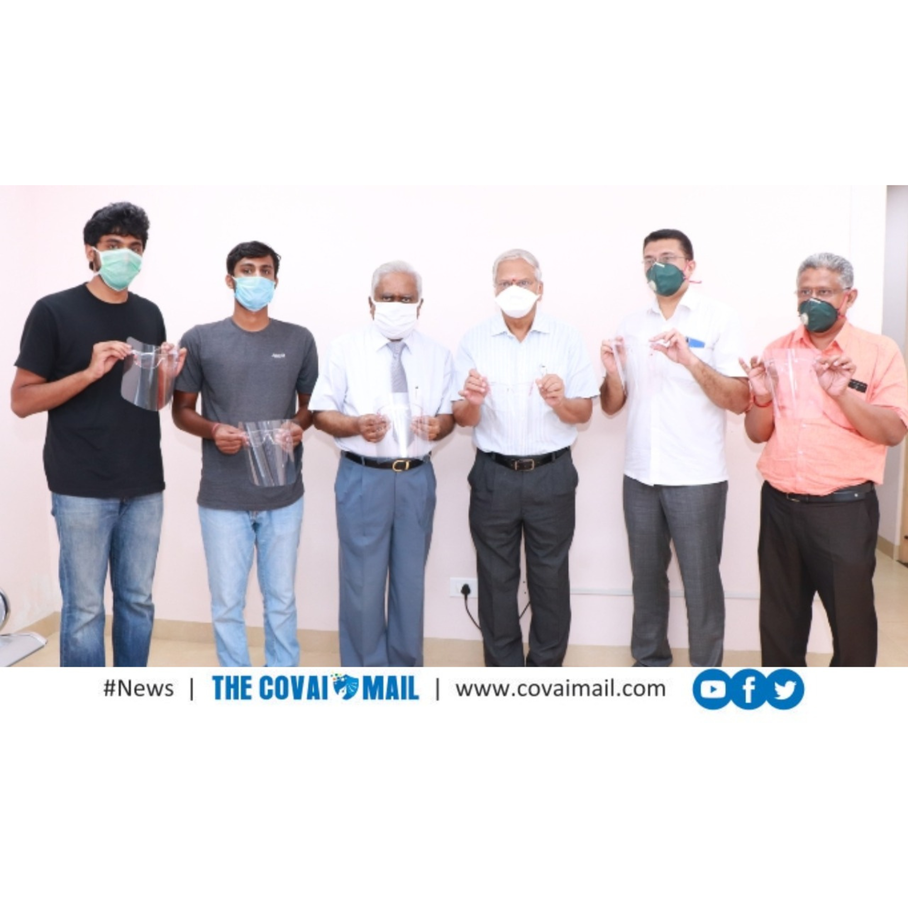
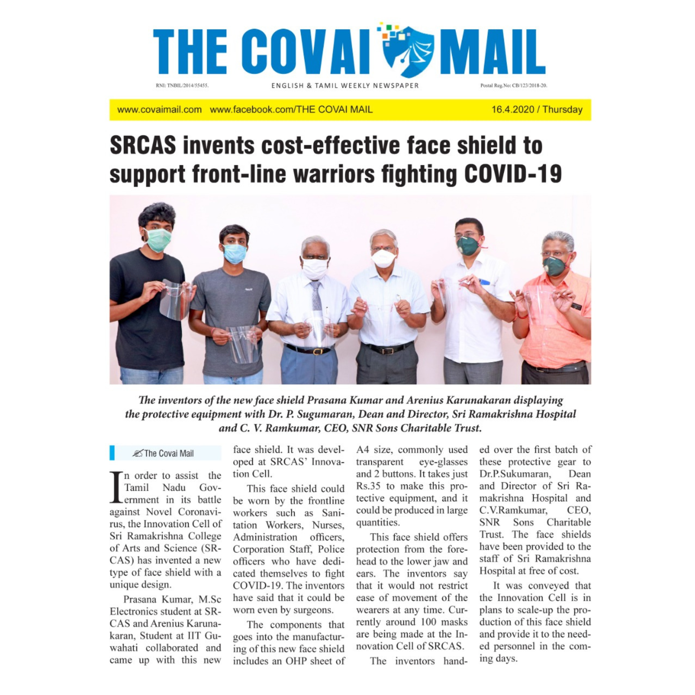

Face Shield for Frontline Workers

At the peak of the pandemic, hospitals were running short on basic protective gear, especially face shields. I teamed up with my friend Arrhenius to build a version that was cheap, quick to produce, and offered better usability than the makeshift models circulating at the time.
We kept the design simple: an acrylic glass strip for structure, an OHP sheet for the visor, and small 3D-printed rivets to hold everything together. That was it. With just these three components, we brought the cost down to roughly 35 rupees per unit.

The shield didn’t fog easily, stayed comfortable during long shifts, and could be cleaned and reused. We supplied them to a few hospitals in the city when they needed them the most, giving frontline workers a bit more protection at a moment when every small contribution mattered.